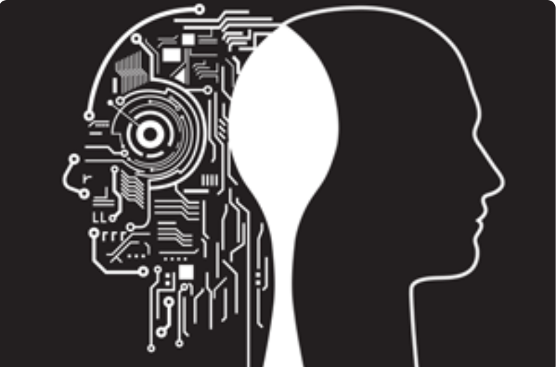

HOW DOES ARTIFICIAL INTELLIGENCE WORK
list:
- main page
- HOW DOES ARTIFICIAL INTELLIGENCE WORK?
- HOW IS AI USED?
- History of artificial intelligence
- Artificial intelligence examples
Artificial Intelligence.
What is Artificial Intelligence? How Does AI Work?
32 Artificial Intelligence Companies Building a Smarter Tomorrow
They may not be household names, but these 32 artificial intelligence companies are working on some very smart technology.
artificial intelligence companies
READ ARTICLE
artificial intelligence future
The Future of Artificial Intelligence
SEE MORE STORIES
What is Artificial Intelligence?
Artificial intelligence (AI) is wide-ranging branch of computer science concerned with building smart machines capable of performing tasks that typically require human intelligence. AI is an interdisciplinary science with multiple approaches, but advancements in machine learning and deep learning are creating a paradigm shift in virtually every sector of the tech industry.
HOW DOES ARTIFICIAL INTELLIGENCE WORK?
Can machines think? — Alan Turing, 1950
Less than a decade after breaking the Nazi encryption machine Enigma and helping the Allied Forces win World War II, mathematician Alan Turing changed history a second time with a simple question: "Can machines think?"
Turing's paper "Computing Machinery and Intelligence" (1950), and it's subsequent Turing Test, established the fundamental goal and vision of artificial intelligence.

At it's core, AI is the branch of computer science that aims to answer Turing's question in the affirmative. It is the endeavor to replicate or simulate human intelligence in machines.
The expansive goal of artificial intelligence has given rise to many questions and debates. So much so, that no singular definition of the field is universally accepted.
The major limitation in defining AI as simply "building machines that are intelligent" is that it doesn't actually explain what artificial intelligence is? What makes a machine intelligent?
In their groundbreaking textbook Artificial Intelligence: A Modern Approach, authors Stuart Russell and Peter Norvig approach the question by unifying their work around the theme of intelligent agents in machines. With this in mind, AI is "the study of agents that receive percepts from the environment and perform actions." (Russel and Norvig viii)
Norvig and Russell go on to explore four different approaches that have historically defined the field of AI:
Thinking humanly
Thinking rationally
Acting humanly
Acting rationally
The first two ideas concern thought processes and reasoning, while the others deal with behavior. Norvig and Russell focus particularly on rational agents that act to achieve the best outcome, noting "all the skills needed for the Turing Test also allow an agent to act rationally." (Russel and Norvig 4).
Patrick Winston, the Ford professor of artificial intelligence and computer science at MIT, defines AI as "algorithms enabled by constraints, exposed by representations that support models targeted at loops that tie thinking, perception and action together."